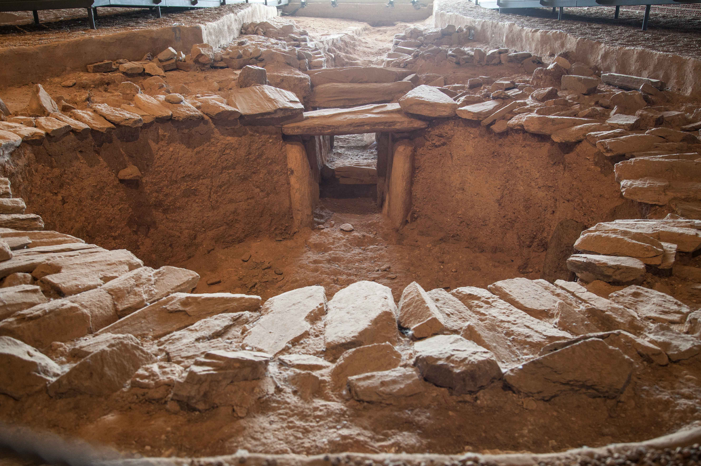
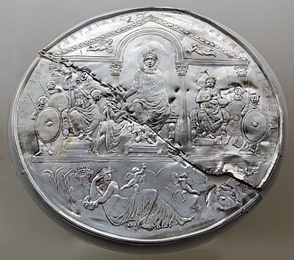
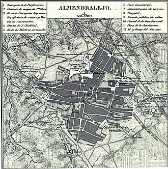

Historia de Almendralejo
Prehistoria
Los vestigios de los primeros moradores de la localidad que hallamos hasta el momento se reflejan en un dolmen de la Vega de Harnina, conocido como Sepulcro de Huerta Montero, los asentamientos de Los Villares y otros restos antiguos, aunque no es hasta 1228 cuando los primeros campesinos llegados desde la cercana Mérida comienzan a formar una aldea, junto al asentamiento autóctono existente, tal vez con una antigüedad mucho anterior.
Fundación medieval
Su fundación se corresponde con el poblamiento del territorio emeritense desarrollado por la Orden de Santiago tras la Reconquista, y tuvo lugar en algún punto indeterminado del siglo XIII. Hay que remontarse al 8 de abril de 1327 para encontrar un privilegio otorgado a Mérida sobre la posesión de derechos militares, económicos y jurídicos sobre los enclaves de la zona como primer documento en el que se nombra a Almendralejo. En él se habla de una vasta extensión plagada de almendros por lo que se le conocía como el Almendral, como aparece en el Libro de la Montería del Rey Don Alfonso el Nono. Dada su cercanía con la antigua capital romana se le llamaba Almendral de Mérida aunque, en relación con su tamaño, pronto se prefirió referirse a ella con el diminutivo Almendralejo. La Orden de Santiago se hizo cargo de su jurisdicción como una de las aldeas de Mérida, constando ya su condición de Encomienda a mediados del siglo XIV.
Edad Moderna
Como la mayoría de los pueblos extremeños, Almendralejo contribuyó a la conquista americana. Según el presbítero Navarro del Castillo, durante el siglo XVI, salieron para Indias 59 personas de Almendralejo. Entre ellos, los más significativos son: Diego Pérez de la Torre, gobernador de Nueva Galicia; Martín Casillas conocido como "el Alarife", arquitecto de la catedral mexicana de Guadalajara; el licenciado Alonso Ortiz de Elgueta, alcalde mayor de Nicaragua y gobernador de Honduras, y Pedro Alonso Galeas y Diego de Paradas, capitanes destacados en la conquista de Venezuela. En 1536, y después de una larga disputa con Mérida, Carlos I concede a Almendralejo la independencia jurisdiccional y el título de Muy Noble Villa. El 23 de diciembre de ese mismo año se compraron por 32 000 ducados de oro (que se pagaron al contado) el título de Villazgo por medio del procurador y apoderado Diego Fernández Buenavida. Aunque, en 1573 la localidad fue vendida a Sevilla junto con Montemolín, Monesterio, Calzadilla de los Barros y Medina de las Torres, por 45 000 ducados, volvió a ser parte de la Orden de Santiago cinco años después. Así, en 1594 formaba parte de la provincia de León de la Orden de Santiago y contaba con 900 vecinos pecheros.2 En 1603 empezó la construcción del Ayuntamiento, en la plaza de España. El 1 de noviembre de 1696, el rey Carlos II concedió el privilegio de Villa Realenga, con su jurisdicción, señorío y vasallaje, al término del importe pagado en 1665, por su compra. Para entonces, Almendralejo contaba con 28 calles, tres plazas y 2000 habitantes. También de esta época procede el primer mapa del municipio, que hoy se encuentra en archivo general del Reino, en Salamanca.
Edad Contemporánea
En 1808, en plena Guerra de la Independencia Española, Juan Nieto y Aguilar, segundo Marqués de Monsalud y coronel de los Reales Ejércitos, se prestó a reunir bajo su mando a todos los vecinos de la villa y pueblos aledaños para luchar en las batallas de Medellín y La Albuera. El 1 de abril del siguiente año la población fue tomada por las tropas francesas, fue liberada por el propio marqués de Monsalud meses más tarde y de nuevo fue sitiada bajo mando francés en 1812. A la caída del Antiguo Régimen la localidad se constituye en municipio constitucional en la región de Extremadura. Desde 1834 es sede del partido judicial de Almendralejo.3 En el censo de 1842 contaba con 1502 hogares y 5810 vecinos.4 El 23 de agosto de 1847 en la finca Sancho, propiedad de Antonio Martínez, a unos 800 metros de la población, el jornalero Juan Aguilar, acompañado por Bartolomé Giraldo, Pedro López y José García, descubrió el Disco de Teodosio, una reliquia de plata de la época romana. La Real Academia de la Historia compró la pieza por 27 500 reales de vellón y por eso hoy se conserva en Madrid, en el Gabinete de Antigüedades de dicha institución. El 26 de enero de 1851, Isabel II concedió a Almendralejo el título de ciudad. A efectos eclesiásticos, hasta 1873 Almendralejo perteneció a la diócesis del Priorato de San Marcos de León, año a partir del cual pasó a la jurisdicción de la diócesis de Badajoz. En 1900, el quinto marqués de Monsalud, Mariano Carlos Solano Gálvez, aficionado a la arqueología y coleccionista, descubrió la Estación Neolítica de la Vega de Harnina, verdadero museo del arte neolítico debido a la cantidad y variedad de las piezas encontradas.
Guerra civil española
El 7 de agosto de 1936, entraron en la localidad las tropas sublevadas al mando del general Franco y tomaron Almendralejo. Antes de la llegada de las fuerzas de asalto, los milicianos republicanos congregaron en el edificio que servía como cárcel a diferentes civiles elegidos por su fe religiosa o por apoyar, según su criterio, a las fuerzas militares que llegaban a la ciudad. Los republicanos los rociaron con líquido inflamable y los asesinaron prendiéndoles fuego, con el objetivo de aterrorizar a sus familias y al resto de la población. Ante el avance imparable de la columna militar sublevada, unos 40 milicianos republicanos se hicieron fuertes en la Torre de la Parroquia de la Purificación. Los militares sublevados decidieron entonces prender fuego a la Parroquia (destruyendo retablos y pinturas) y bombardear la Torre (haciendo un gran agujero en el cuerpo de campanas) con un cañón que instalaron en la Fuente la Negra para forzar la rendición de los republicanos, que resistieron hasta el 15 de agosto, cuando se rindieron, siendo casi todos fusilados de inmediato. Acto seguido, asesinaron a unos 1.000 civiles.
Democracia
El primer alcalde del actual régimen democrático fue Juan Pabón, regidor local desde 1979 hasta 1983 por UCD. Después fue relevado por José García Bote, apodado el Aspirina, alcalde por el PSOE desde 1983 hasta 1995. Le siguió Manuel Jesús Morán Rosado desde 1995 hasta 1999 por el PP. Francisco Javier Fernández Perianes tuvo un efímero mandato (1999-2000) por el PP y le sustituyó, tras una moción de censura con el apoyo de Miguel Cansado (Izquierda Unida), José María Ramírez Morán, del PSOE, que estuvo desde el año 2000 hasta 2011. José García Lobato, por el PP, entró en 2011 y ejerció de alcalde hasta junio de 2019, cuando José María Ramírez inició su segundo mandato, ocho años después, gracias al apoyo de Ciudadanos, que con tres concejales más diez de los socialistas, sumaron mayoría absoluta. En 2023 volvió a ganar el PSOE por mayoría absoluta volviendo a ser alcalde José María Ramírez y, con ello el PSOE conquistaría su quinta mayoría absoluta desde la democracia. Actualmente Almendralejo es reconocida como «Ciudad del Cava» —un tipo de vino espumoso— y pertenece a la «Región del Cava», según determina el Centro Regulador del Cava. La producción del cava en Almendralejo comenzó en la década de 1980 con un grupo de tres empresarios que crearon el «Cava Vía de la Plata», inscrito en la D.O. Cava desde 1983. En 1985 nació «Cava Bonaval». En la actualidad hay cuatro bodegas inscritas en la D.O. Cava: Bodegas Vía de la Plata, Bodegas López Morenas, Bodegas Romale y Bodegas Marcelino Díaz. Asimismo, en Almendralejo se encuentra la sede del consejo regulador de la denominación de origen Ribera del Guadiana, que incluye un amplio territorio.